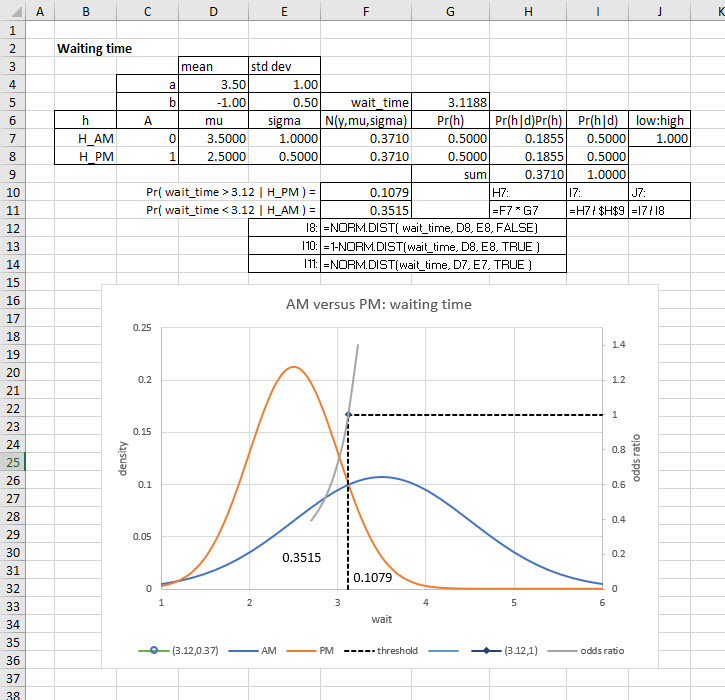
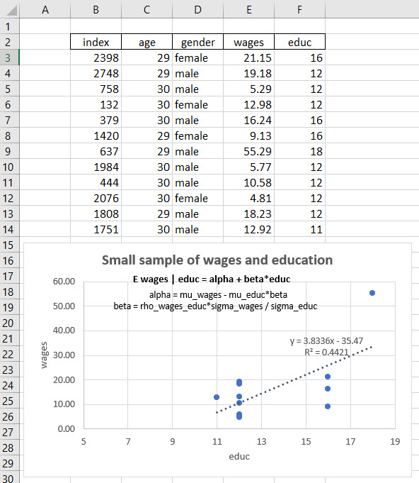
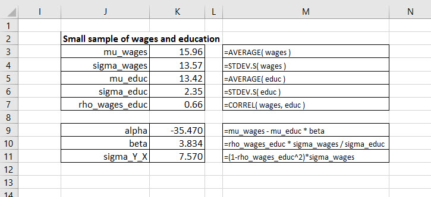
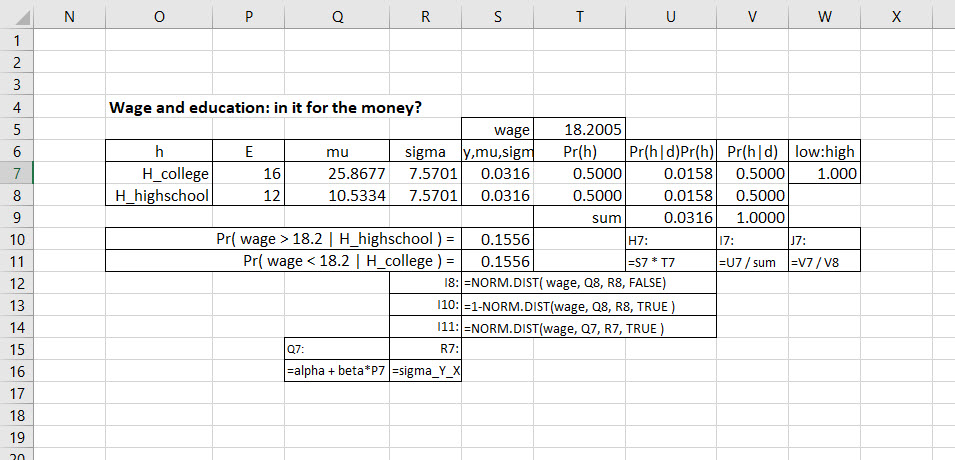

Chapter 11 Relationships Put to the Test
11.1 It’s not so hard to imagine this…
There are lines everywhere! At the store, in cafeterias, waiting for buses, trains, our friends to pick us up, the line formed by the process of doing homework, baking a cake, getting an insight. All of this takes time. Waiting times exploit our sense of satisfaction and accomplishment. We desire short waiting lines especially when we do not prefer to be in the line in the first place. The opposite happens when we listen to deeply moving music, regard a dramatically poignant painting: we want the moment to last.
Our team is about to assist the College’s administration of COVID-19 vaccinations on campus. Organizers have tasked us with analyzing the results of the duration of time students, faculty, and staff stand in line waiting for a vaccination. The times have been observed in morning and afternoon shifts. A way of thinking about waiting times is this model.
\[ \mu_{i} = \alpha_{i} + \beta_{i}A_i \]
where \(\mu_i\) is the average waiting time in minutes at vaccination station \(i\), \(\alpha_i\) is the average morning waiting time, \(\beta_i\) is the average difference in morning and afternoon waiting times, and \(A_i\) is a zero/one indicator of whether we are in the afternoon shift, 1, or present ourselves to the morning shift, 0.
THe model seems simple enough to understand, and possibly communicate to others. Waiting times, we hypothesize, depend upon a single factor, whether the test occurs in the morning, or in the afternoon. If \(A_i=0\), then we observe a waiting time average in the morning only. The average waiting time is this.
\[ \begin{align} \mu_{i} \mid (A_i=0) &= \alpha_{i} + \beta_{i}(0) \\ \mu_{i} \mid (A_i=0) &= \alpha_{i} \end{align} \]
Only the intercept \(\alpha_i\) matters in this conditional expression.
Given that we observe waiting times in the afternoon, then \(A_i = 1\).
\[ \begin{align} \mu_{i} \mid (A_i=1) &= \alpha_{i} + \beta_{i}(1) \\ \mu_{i} \mid (A_i=1) &= \alpha_{i} + \beta_{i} \end{align} \]
This allows us to add the average waiting time differential for the afternoon \(\beta_i\) for each station \(i\) to the morning average waiting time \(\alpha_i\).
Here is the management problem we might face. If we observe a waiting time of 5 minutes, should we label this a morning-style of waiting? By style, we now abstract from chronological notions of morning and afternoon. We release ourselves from the idea of a clock. We now have two possible regimes: one that looks like a typical chronological morning, the other that mimics an afternoon.
We now focus on the problem of deciding, probabilistically speaking of course, whether a relatively high wait time mimics a morning session or an afternoon session. The implications might influence staffing, scheduling, availability of vaccines on hand, size of facility, effect of weather on waiting lines, and so on, and so forth.
We will focus on a single vaccination station to work out the kinks of our model, and of our thinking. All of this allows us to specify these mutually exclusive hypotheses, at least logically so.
\[ \begin{align} H_{PM}:&\,\, \mu_{PM} = \alpha + \beta, \, &&&with \, Pr(H_{PM}) &= p \\ H_{AM}:&\,\, \mu_{AM} = \alpha, \, &&&with \, Pr(H_{AM}) &= 1-p \end{align} \]
While logically mutual exclusivity exists, we can imagine that distributions of \(\mu_{PM}\) and \(\mu_{AM}\) might overlap in probability. The hypotheses are two classifications of a waiting time. There are two of them and thus we often use the term binary classification to describe what we are to do next. We believe also that the \(PM\) regime is \(p\) probable, so that the \(AM\) shift must be \(1-p\) probable.1
Let’s insert data into this otherwise very theoretical story. Here is an Excel rendering of these hypotheses and the (Bayesian) binary classification model.

The cross-over of the two distributions is fairly high up the frequency axis. The probability to the left of the 1:1 threshold 3.1188 under the AM distribution (blue) curve much larger than the probability under the red PM distribution curve. Any observations of waiting times greater than 3.1188 would most probably be AM shifts, and any less are PM timings.
So ends our initial foray into conditioning a variate and building hypotheses. The condition is of the simplest kind, 0 or 1. The expected values of waiting times depend on the rules of the conditioning conveyed by an intercept and slope. The model naturally yields the two hypotheses.
We now wonder what might happen if the conditioning was more like the wages \(W\) and educational attainment \(E\) model. We hypothesize that wages depend on educational level. We will use a straightline model again.
\[ \mu_W = \alpha + \beta E \] We retrieve wages \(W\) as normally distributed with mean \(\mu_W\) and \(\sigma_W\).
\[ W \sim \operatorname{N}(\alpha + \beta E ,\, \sigma_W) \] We believe there is some sort of dependency, at least an association between \(W\) and \(E\). We might measure this with correlation \(\rho\). We might also wonder what comes of \(\alpha\) and \(\beta\) in the face of \(\rho\). We might as well throw in \(\mu_E\) and \(\sigma_E\) while we are at it. That’s our next job.
11.2 The maths! The maths!
We can fuss about all we want about the maths, but they are impervious to our feelings. They remain. We can stay, or go. If we stay, and spend the time in active pursuit (just like a waiting time, waiting for insight), we might achieve a learning apogee. We suppose that we will stay awhile, for the time being. Now let us dig into our model of waiting times. Our first stop is a set of tools we will need for the excavation.
In what follows we use \(Y\) as the wage, the metric we want to generate from its mean and standard deviation. We conjecture that \(Y\) depends on \(X\), the level of educational attainment through the conditional mean of \(Y \mid X\), just like we did with vaccination waiting times.
11.2.1 What did we all expect?
We define expectations as aggregations of two kinds of information. One is the information provided by an array of outcomes \(Y_i\) for \(i=1 \ldots N\), where \(i\) indexes \(N\) outcomes. The other is the array of probabilities assigned to each outcome \(\pi_i\). The frequentist will assign \(\pi = f_i/N\), where \(f_i\) is the long-run frequency of occurrence of outcome \(i\). However, we will assign \(\pi\) as a normalized index of the logical plausibility of an outcome where all \(\pi\)s add up to one and each is somewhere between 0 and 1. This allows us to interpret probability as an extension of logic, where probability quantifies the reasonable expectation that everyone (even a robot or golem ) who shares the same knowledge ( experience, understanding, and judgment) should share in accordance with the rules of conditional probability.2 All of this ensures we have a complete picture of all of the probability contributions, as weights, of each outcome consistent with a systematic, principled way to reason about uncertainty.
The aggregation is then this expression for the expectation \(E\) of outcomes \(Y\).
\[ \begin{align} \operatorname{E}Y = \sum_{i}^{N} \pi_i Y_i \end{align} \]
In this way we can say that \(\operatorname{E}\) operates on \(Y\) where to operate means to aggregate several outcomes \(X_i\) into one number (or possibly function) by multiplying probability weights times outcomes and then summing the products. That’s really two operations combined into the expectation operation. And so goes the maths!
Using this idea of an operator \(\operatorname{E}Y\) means we define the aggregation as this expression.
\[ \begin{align} \operatorname{E} = \sum_{i}^{N} \pi_i \times \end{align} \] Here are some of the algebraic rules of the road when we use this highly condensed short-hand notation.
\[ \begin{align} Y &= \alpha\,X \\ \operatorname{E}Y &= \operatorname{E}[\alpha\,X] \\ &= \sum_{i}^{N}[\pi_i\,(\alpha\,X_i) ] \\ &= \pi_1\,\alpha\,X_1 + \ldots \pi_N\,\alpha\,X_N \\ &= \alpha \, (\pi_1\,X_1 + \ldots \pi_N\,X_N) \\ &= \alpha\,\sum_{i}^{N}[\pi_i\,(X_i) ] \\ &= \alpha\,\operatorname{E}X \end{align} \] This means that we can take the constant \(\alpha\) outside of the expectation operator. All we did, step by step on the logical staircase, is to use the definition of the operator and then manipulate it algebraicly to deduce an equivalent expression.
If \(X_1=1, \ldots, X_N=1\), and the sum of probabilities \(\sum_{i}^N \, \pi_i = 1\), then we can deduce this expression.
\[ \begin{align} Y &= \alpha\,X \\ \operatorname{E}Y &= \operatorname{E}[\alpha\,X] \\ &= \sum_{i}^{N}[\pi_i\,\dot (\alpha\,X_i) ] \\ &= \pi_1\,\alpha\,(1) + \ldots \pi_N\,\alpha\,(1) \\ &= \alpha \, (\pi_1\,(1) + \ldots \pi_N\,(1) \\ &= \alpha\,\sum_{i}^{N}[\pi_i (1)] \\ &= \alpha\,\operatorname{E}1 \\ &= \alpha \end{align} \] This may have been immediately clear to some of us before the 7 step deduction, but we might find it reassuring that the deduction verifies, and perhaps validates, our initial conjecture. We also discover another relationship.
\[ \operatorname{E}1 = 1 \] In algebra we call this the identity operator. For any number or variable, or even another expectation, \(\alpha\), then this is true.
\[ \begin{align} \alpha \, \operatorname{E}1 &= \alpha\, 1 \\ &= \alpha \end{align} \] Yes, this is identity under a multiplication. Is there a zero? Yes, \(\operatorname{E}0 = 0\), the identity operator under addition. Anything added to \(\operatorname{E}0=0\) just returns itself.
What is the expectation of a sum of variables \(X\) and \(Y\)?
\[ \begin{align} Z &= X+Y \\ \operatorname{E}Z &= \operatorname{E}[X + Y] \\ &= \sum_{i}^{N}[\pi_i\,(\,X_i + Y_i) ] \\ &= \pi_1\,\,(X_1 + Y_1) + \ldots \pi_N\,(X_N+Y_N) \\ &= (\pi_1\,X_1 + \ldots \pi_1\,X_N) + (\pi_N\,Y_N + \ldots \pi_N\,Y_N) \\ &= \sum_{i}^{N}[\pi_i\,(X_i) ] + \sum_{i}^{N}[\pi_i\,(Y_i) ] \\ &= \operatorname{E}X + \operatorname{E}Y \end{align} \] The expectation of a sum of outcome variables is the sum of the expectations of each variable.
We just examined a sum of two variables, so it behooves us to look at the product of two variables.
\[ \begin{align} Z &= XY \\ \operatorname{E}Z &= \operatorname{E}[XY] \\ &= \sum_{i}^{N}[\pi_i\,(\,X_i\,Y_i) ] \\ &= \pi_1\,X_1 \, Y_1 + \ldots \pi_N\,X_N\,Y_N) \\ &= \operatorname{E}XY \end{align} \] Alas, we have reduced this operation to its simplest expression already. If \(Y=X\), going through the same steps as above we find this out.
\[ \begin{align} if\,\,Z &= XY \\ and \\ Y &= X \\ then \\ Z&= XX\\ \operatorname{E}Z &= \operatorname{E}[XX] \\ &= \sum_{i}^{N}[\pi_i\,(\,X_i\,X_i) ] \\ &= \pi_1\,X_1 \, X_1 + \ldots \pi_N\,X_N\,X_N) \\ &= \pi_1\,X_1^2 + \ldots \pi_N\,X_N^2 \\ &= \operatorname{E}X^2 \end{align} \]
It turns out that we can take an expression like this, \(Y=\alpha + \beta\,X\), multiply it by \(X\) and, then operate on it with \(\operatorname{E} = \sum_{i}^{N} \pi_i \times\) with the tools we now possess.
\[ \begin{align} Y &=\alpha + \beta\,X \\ XY &= \alpha\,X + \beta\,XX \\ XY &= \alpha\,X + \beta\,X^2 \\ \operatorname{E}XY &= \operatorname{E}[\alpha\,X + \beta\,X^2] \\ &= \operatorname{E}[\alpha\,X] + \operatorname{E}[\beta\,X^2] \\ &= \alpha\,\operatorname{E}[X] + \beta\,\operatorname{E}[X^2] \end{align} \] This will be very useful indeed. We usually will call \(\operatorname{E}X = \mu_X\) in honor of the mean of the population of all possible realizations of \(X\). We already know this as the weighted average of \(X\) outcomes, where the weights are probabilities, all of which add up to 1. What about \(\operatorname{E}X^2\)? To ponder this we consider the calculation of another very familiar metric, the square of the standard deviation, which has been dubbed the variance. We start with the definition and use all of the new tricks up our sleeves. We define variance as the probability weighted average of squared deviations of outcomes from the expected outcome.
We will need the remembrance of things in our algebraic past that look like this.
\[ \begin{align} (a + b)^2 &= (a + b)(a + b) \\ &= a^2 + 2ab + b^2 \end{align} \]
In what follows \(a = X\) and \(b = -\operatorname{E}X\). We will also need to remember that \(-2b^2 + b^2 = -b^2\).
\[ \begin{align} define \\ \sigma_X^2 &= Var(X) \\ then \\ Var(X) &= \operatorname{E}(X - \operatorname{E}X)^2 \\ &= \operatorname{E}(X^2 - 2X\operatorname{E}X + \operatorname{E}X^2) \\ &= \operatorname{E}X^2 - \operatorname{E}[2X\operatorname{E}X] + \operatorname{E}[\operatorname{E}X^2] \\ &= \operatorname{E}X^2 - 2(\operatorname{E}X)^2 + (\operatorname{E}X)^2 \\ &= \operatorname{E}X^2 - (\operatorname{E}X)^2 \\ &= \operatorname{E}X^2 - \mu_X^2 \\ thus \\ \sigma_{X}^2 &= \operatorname{E}X^2 - \mu_X^2 \\ rearranging \\ \operatorname{E}X^2 &= \sigma_{X}^2 + \mu_X^2 \end{align} \]
Let’s now move on to the piece de resistance , \(\operatorname{E}XY\). We start with the definition of covariance, for this is where an \(XY\) product resides.
\[ \begin{align} define \\ \sigma_{XY} &= Cov(X, Y) \\ then \\ Cov(X, Y) &= \operatorname{E}(X - \operatorname{E}X)(Y - \operatorname{E}Y) \\ &= \operatorname{E}(XY - X\operatorname{E}Y - Y\operatorname{E}X + \operatorname{E}X\,\operatorname{E}Y) \\ &= \operatorname{E}(XY - \operatorname{E}X\,\operatorname{E}Y - \operatorname{E}Y\,\operatorname{E}X + \operatorname{E}X\,\operatorname{E}Y) \\ &= \operatorname{E}XY - 2\operatorname{E}X\,\operatorname{E}Y + \operatorname{E}\,X[\operatorname{E}Y \\ &= \operatorname{E}XY - \operatorname{E}X\,\operatorname{E}Y \\ thus \\ \sigma_{XY} &= \operatorname{E}XY - \mu_X\mu_Y \\ rearranging \\ \operatorname{E}XY &= \sigma_{XY} + \mu_X\mu_Y \end{align} \]
Now we can go to work on our model with one more stop: solving a simultaneous equation. This tool too will come in handy. We suppose we have the following two equations in \(a\) and \(b\). We will use the row-column convention of subscripts. Thus coefficient \(c_{12}\) will be in row 1, column 2 of a matrix. First the two equations.
\[ \begin{align} c_{11}a + c_{12}b &= d_1 \\ c_{21}a + c_{22}b &= d_2 \end{align} \]
In matrix form this is a very tidy arrangement like this.
\[ \begin{align} \begin{bmatrix} c_{11} & c_{12} \\ c_{21} & c_{22} \end{bmatrix} \begin{bmatrix} a \\ b \end{bmatrix} &= \begin{bmatrix} d_1 \\ d_2 \end{bmatrix} \\ \mathrm{C}\mathrm{a} &= \mathrm{d} \end{align} \]
Very tidy indeed! We might remember that a unique solution exists only if (or is it if and only if?) when the determinant of the matrix \(\mathrm{C}\) is not zero. If it is, then the solution \(\mathrm{a}=\mathrm{C}^{-1}d\) does not exist and the model is singular. In what we will do below we will compose our coeffients of means, standard deviations and correlations. Some combinations of these aggregations, constants, will prove to yield a zero determinant, and a singular model results.
The determinant \(\det{\mathrm{C}}\) is
\[ \det{\mathrm{C}} = c_{11}c_{22}-c_{12}c_{21} \] The solution proceeds in two sweeps, one for each of \(a\) and \(b\). In the first sweep we replace the first, the \(a\) column, in \(\mathrm{C}\) with the column vector \(d\). We find the determinant of this new \(\mathrm{C}_a\) matrix and divide by \(\det{\mathrm{C}}\). Here we go.
\[ \begin{align} original \, \, &\mathrm{C} \\ \begin{bmatrix} c_{11} & c_{12} \\ c_{21} & c_{22} \end{bmatrix} \\ swap\,\, out\,\, &first\,\, column \\ \mathrm{C}_a &= \begin{bmatrix} d_{1} & c_{12} \\ d_{2} & c_{22} \end{bmatrix} \\ then \\ a &= \frac{\det{\mathrm{C_a}}}{\det{\mathrm{C}}} \\ &= \frac{d_1c_{22}-d_2c_{12}}{c_{11}c_{22}-c_{12}c_{21}} \end{align} \]
Now the second sweep in all its glory.
\[ \begin{align} original \, \, &\mathrm{C} \\ \begin{bmatrix} c_{11} & c_{12} \\ c_{21} & c_{22} \end{bmatrix} \\ swap\,\, out\,\, &first\,\, column \\ \mathrm{C}_b &= \begin{bmatrix} c_{11} & d_{1} \\ c_{21} & d_2 \end{bmatrix} \\ then \\ b &= \frac{\det{\mathrm{C_b}}}{\det{\mathrm{C}}} \\ &= \frac{c_{11}d_2-c_{21}d_1}{c_{11}c_{22}-c_{12}c_{21}} \end{align} \]
Very much a formula for the ages.
11.2.2 Walking the straight line
Here is our model where both \(Y\) and \(X\) have some distribution with \(\pi\) probabilities for each. Here we use \(\pi\) as the Greek letter for \(p\), not as the \(\pi\) of circle fame. Both \(Y\) and \(X\) are what we will very loosely call random variables, because they have outcomes with associated probabilities of occurrence.
\[ Y = \alpha + \beta\, X \] We now ask the question, what is \(\operatorname{E(Y \mid X=x)=\mu_{Y \mid X}}\)? What, on weighted average, can we expect \(Y\) to be? First of all, this must be true.
\[ \begin{align} if \\ \operatorname{E}(Y \mid X=x) &= \mu_{Y \mid X} \\ then \\ \mu_{Y \mid X} &= \operatorname{E}(\alpha + \beta\, X) \\ &= \operatorname{E}\alpha (1) + \operatorname{E}(\beta\,X) \\ &= \alpha\,\operatorname{E}1 + \beta\,\operatorname{E}X \\ &= \alpha\,(1) + \beta\,\mu_X \\ &= \alpha + \beta\,\mu_X \end{align} \]
Result one is in hand, \(\mu_{Y \mid X}= \alpha + \beta\,\mu_X\) is a true statement according to our many deductions. By the way the statement \(\mu_{Y \mid X} = \alpha\,\operatorname{E}1 + \beta\,\operatorname{E}X\) is an example of the distributive property of multiplication over addition.
Now for our second trick we multiply \(Y\) by \(X\) to get a second result and a second true statement. We will condense \(Y \mid X = Y\) to save what’s left of our eyesight. We remember all of our hard work above, especially this inventory of results.
\[ \begin{align} \operatorname{E}Y &= \mu_{Y} \\ \operatorname{E}X &= \mu_{X} \\ \operatorname{E}X^2 &= \sigma_{X}^2 + \mu_X^2 \\ \operatorname{E}XY &= \sigma_{XY} + \mu_X\mu_Y \end{align} \]
Using this inventory more than a few times we get these results.
\[ \begin{align} Y &= \alpha + \beta\, X \\ then \\ XY &= \alpha\,X + \beta\, XX \\ &= \alpha\,X + \beta\, X^2 \\ so\,\,that \\ \operatorname{E}XY &= \operatorname{E}(\alpha\,X + \beta\, X^2) \\ &= \operatorname{E}\alpha\,X + \operatorname{E}\beta\,X^2 \\ &= \alpha\,\operatorname{E}X + \beta\,\operatorname{E}X^2 \\ &= \alpha\,\mu_X + \beta\,(\sigma_X^2 + \mu_X^2) \\ but\,\,we\,\,know\,\,that \\ \operatorname{E}XY &= \sigma_{XY} + \mu_X\mu_Y \\ thus,\,\, again \\ \sigma_{XY} + \mu_X\mu_Y &= \alpha\,\mu_X + \beta\,(\sigma_X^2 + \mu_X^2) \end{align} \]
We now have two equations in two, as yet to be determined, unknowns. They are unobserved data, \(\alpha\) and \(\beta\). Both equations are true, and true jointly. This means we can stack one on top of the other as a simultaneous equation system and, we hope this time, solve them for unique values of \(\alpha\) and \(\beta\). Yes, we demand a formula!
Here are the two equations with \(\alpha\) and \(\beta\) terms on the left-hand side and constant terms, the expectations are all constant aggregations, on the right-hand side of the equation. We also commutes the terms so that our unknowns are pre-multiplied by coefficients.
\[ \begin{align} \alpha + \mu_X\,\beta &= \mu_Y \\ \mu_X\,\alpha + (\sigma_X^2 + \mu_X^2)\,\beta &= \sigma_{XY} + \mu_X\mu_Y \end{align} \]
The matrix representation will help us easily match coefficients with our simultaneous equation model, way above as we replicate below.
\[ \begin{align} \begin{bmatrix} c_{11} & c_{12} \\ c_{21} & c_{22} \end{bmatrix} \begin{bmatrix} a \\ b \end{bmatrix} &= \begin{bmatrix} d_1 \\ d_2 \end{bmatrix} \\ \mathrm{C}\mathrm{a} &= \mathrm{d} \end{align} \]
Our simultaneous equations of expected values for the linear model \(Y=\alpha+\beta X\) yields this structure.
\[ \begin{align} \alpha + \mu_X\,\beta &= \mu_Y \\ \mu_X\,\alpha + (\sigma_X^2 + \mu_X^2)\,\beta &= \sigma_{XY} + \mu_X\mu_Y \\ becomes \\ \begin{bmatrix} 1 & \mu_X \\ \mu_X & \sigma_X^2 + \mu_X^2 \end{bmatrix} \begin{bmatrix} \alpha \\ \beta \end{bmatrix} &= \begin{bmatrix} \mu_Y \\ \sigma_{XY} + \mu_X\mu_Y \end{bmatrix} \\ \mathrm{C}\mathrm{a} &= \mathrm{d} \end{align} \] We can solve for the unobserved, unknown, and otherwise conjectured (we might smell a hypothesis brewing here) \(\alpha\) and \(\beta\) using our trusty determinant solutions.
\[ \begin{align} \alpha &= \frac{\mu_Y(\sigma_x^2 + \mu_X^2) - \mu_X(\sigma_{XY} + \mu_X\mu_Y)}{\sigma_X^2 + \mu_X^2 - \mu_x^2} \\ &= \frac{\mu_Y\sigma_X^2 - \mu_X\sigma_{XY}}{\sigma_X^2} \\ &= \mu_Y - \mu_X\frac{\sigma_{XY}}{\sigma_X^2}\\ and\,\, then \\ \beta &= \frac{\det{\mathrm{C_{\beta}}}}{\det{\mathrm{C}}} \\ &= \frac{c_{11}d_2-c_{21}d_1}{c_{11}c_{22}-c_{12}c_{21}} \\ &= \frac{\sigma_{XY} + \mu_X\mu_Y - \mu_X\mu_Y}{\sigma_X^2 + \mu_X^2 - \mu_x^2} \\ &= \frac{\sigma_{XY}}{\sigma_X^2} \end{align} \]
Yeow! All that work to get at this simplification all due to the wonderful result that \(\alpha\) has \(\beta = \sigma_{XY}/\sigma_X^2\) in it.
\[ \begin{align} \operatorname{E}(Y \mid X) &= \alpha + \beta\,X \\ \operatorname{E}(Y \mid X) &= \left(\mu_Y - \mu_X\frac{\sigma_{XY}}{\sigma_X^2}\right) + \frac{\sigma_{XY}}{\sigma_X^2}\,X \\ rearranging\,\,terms\\ \operatorname{E}(Y \mid X) &= \mu_Y + \frac{\sigma_{XY}}{\sigma_X^2}(X - \mu_X) \end{align} \]
The second formulation is also the basis for the vaunted Capital Asset Pricing Model in finance, where \(Y\) is the return on a security (stock, bond, etc.) and \(X\) is the return on a market index (e.g., S&P 500).
We have, yes, one more stop, before we drop. The definition of correlation is here.
\[ \rho = \frac{\sigma_{XY}}{\sigma_X\,\sigma_Y} \] We can use this to rearrange the deck chairs on this Titanic of a beast of gnarly maths (all algebra! and barely a faint odor of calculus?).
\[ \begin{align} if \\ \rho &= \frac{\sigma_{XY}}{\sigma_X\,\sigma_Y} \\ then \\ \sigma_{XY} &= \rho\,\sigma_X\,\sigma_Y\\ thus \\ \beta &= \frac{\sigma_{XY}}{\sigma_X^2} \\ &= \frac{\rho\,\sigma_X\,\sigma_Y}{\sigma_X^2} \\ &= \frac{\rho\,\sigma_Y}{\sigma_X} \end{align} \] We need numbers, fast. But we should hold on. One more calculation to make. After we have the mean, but what about the conditional standard deviation?
11.2.3 A short variance diatribe
Here we take the standard deviation as given, perhaps at our peril. The variance of waiting times is
\[ Var(Y \mid X) = (1-\rho^2)\sigma_Y^2 \]
How do we get this? A lot easier than the preceding. There are no simultaneous equations to worry about. Here’s the algebra.
\[ \begin{align} Var(Y \mid X) &= \operatorname{E}[Y - \operatorname{E}(Y \mid X)]^2 \\ &= \operatorname{E}[Y - (\mu_Y + \frac{\sigma_{XY}}{\sigma_X^2}(X - \mu_X))]^2 \\ &= \operatorname{E}[(Y- \mu_Y) + \frac{\sigma_{XY}}{\sigma_X^2}(X - \mu_X)]^2 \\ &= \operatorname{E}[(Y- \mu_Y)^2 + \frac{\rho_{XY}^2\sigma_Y^2}{\sigma_X^2}(X - \mu_X)^2 - 2\frac{\rho_{XY}\sigma_Y}{\sigma_X}(Y- \mu_Y)(X - \mu_X)] \\ &= \operatorname{E}[(Y- \mu_Y)^2] + \frac{\rho_{XY}^2\sigma_Y^2}{\sigma_X^2}\operatorname{E}[(X - \mu_X)^2] - 2\frac{\rho_{XY}\sigma_Y}{\sigma_X}\operatorname{E}[(Y- \mu_Y)(X - \mu_X)] \\ &= \sigma_Y^2 + \frac{\rho_{XY}^2\sigma_Y^2}{\sigma_X^2} \sigma_X^2 - 2\frac{\rho_{XY}\sigma_Y}{\sigma_X}(\rho_{XY}\sigma_X\,\sigma_Y) \\ &= \sigma_Y^2 - \rho_{XY}^2\sigma_Y^2 \\ &= (1 - \rho_{XY}^2)\sigma_Y^2 \end{align} \] Done! If the joint distribution of \(X\) and \(Y\) is Gaussian, then we can generate \(Y \mid X \sim \operatorname{N}( \alpha + \beta X, (1 - \rho_{XY}^2)\sigma_Y^2)\). Now we can infer \(Y\) behavior.
11.3 Does education matter?
Finally, some numbers? Suppose this is the data and an Excel trendline through the scatter plot for wages and education from way long ago.

Excel calculates an intercept \(\alpha = -35.47\), and slope \(\beta=3.834\).
Here we calculate intercepts and slopes based on the expectation of wages conditional on education level.

The calculations align exactly with Excel’s view of the universe.
11.4 Back to the business at hand
We used all of that math to understand the ins and outs of conditional expectations. The condition influences at least the expectation, it also influences the conditional standard deviation. Here we take the standard deviation as given, perhaps at our peril. The variance of waiting times is
\[ Var(Y \mid X) = (1-\rho^2)\sigma_Y^2 \] Here’s the question before us: if we spend more years being educated, do we have a higher wage? We can mold thi into two hypotheses to put a point on it. How do wages compare between 18 years of schooling (4 years post-secondary education) and 16 years (secondary education)?
\[ \begin{align} H_{college}:&\,\, \mu_{college} &= \alpha + \beta (16), \, &&&with \, Pr(H_{college}) &= p \\ H_{high school}:&\,\, \mu_{highschool} &= \alpha + \beta (12), \, &&&with \, Pr(H_{highschool}) &= 1-p \end{align} \]
Let’s compute some parameters.
It is now a matter of depositing these values into our hypothesis testing model, the one we used with waiting times, modified for wages and education.

We have a perfectly symmetrical solution for the equal probability, even odds, experiment. Consistent with this sample only, 16 years of education seems to work for a wage less than $18.20/hour. Any wage greater than that is consistent with 18 years of education, in this sample, and probably so.
Oh, and yes education matters, at least financially, and in this sample, probably so.
11.5 Does it really matter?
Here is another hypothesis test. Suppose we are still wary of all of the math and its interpretation and even the data and anecdotal, personal, experience. The skeptic says educational attainment does not matter. The critical thinker says, let’s use data to help us understand whether the skeptic’s claims are true, probably.
Here are binary hypotheses for us to consider. We whittle the skeptic down to a level of educational attainment the skeptic can live with, at least for this test. The level is \(E=12\) years for a yes answer. The skeptic also agrees to the same sample we used before and no means \(\beta=0\). For the skeptic, and the model, this means that \(E\) has no impact, no relationship with wages.
\[ \begin{align} H_{no}:\,\, \mu_{no} &= \alpha, \, &&with \, Pr(H_{no}) = p \\ H_{yes}:\,\, \mu_{yes} &= \alpha + \beta (12), \, &&with \, Pr(H_{yes}) = 1-p \end{align} \]
The \(\mu_{no}\) and \(\mu_{yes}\) are the results of two different ways, two different conjectures, two different models of behavior. We build no and yes into our computational model in the next round. The problem is that in this sample, the intercept \(\alpha < 0\).
11.6 References and endnotes
We could do very well to check out this [Excel implementation of an entropic, almost Bayesian, approach to classification.[(https://pubsonline.informs.org/doi/10.1287/ited.1100.0060) What is entropy? From thermodynamic irregularities to the delivery of anaesthesia, entropy can measure chaos. It has a lot to do with the \(log((1-p)/p)\) portion of the 1:1 odds threshold we discussed.↩︎
Cox’s theorem provides a logical underpinning to this statement: the rules of probability theory need not be derived from a definition of probabilities as relative frequencies (frequentist approach). He goes further to show that the properties of probability as logic but also follow from certain properties one might desire of any system of plausible reasoning about uncertainty. Van Horn is a tutorial on Cox’s approach. Plausible reasoning may be illustrated with this example of the distinction between gradual degrees of possible outcomes, that is, uncertainty, and what is or is not, that is, truth. As an example, one’s confidence in the statement Daniel is well over six feet tall, after seeing Daniel, legs splayed out, sitting at a desk, is a degree of plausibility. In contrast, the statement Daniel is tall may be somewhat true (if Daniel measures five feet eleven inches and the definition of tall is greater than or equal to six feet) or entirely true (if Daniel measures seven feet one inch).↩︎